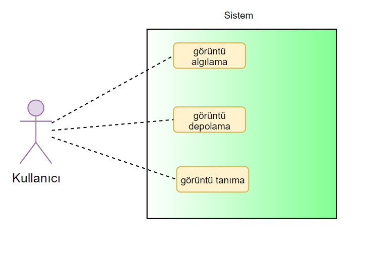
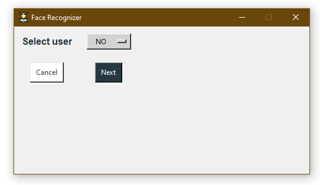

Projenin Amacı
Yüz tanıma işlemi sırasında her kişiye ait yüzü matematiksel bir algoritma ile, değiştirilemez ve yeniden üretilemez bir kodla tanımlayan sistem, insan yüzünde yer alan dudak ve burun gibi noktaların algoritmasını işleyerek doğruluk oranını en üst seviyeye çıkartır.
Yüzler, kullanan kurumlar tarafından belirlenen standartlar doğrultusunda geçmişe yönelik ya da canlı kayıtlar üzerinden aranabilir. Taranan görüntü kaynağının yalnızca güvenlik kameralarından gelen görüntüler olmasına gerek bulunmaz. Akıllı telefonlar, kameralar veya YouTube gibi platformlarda bulunan videolar sisteme yüklenerek de tarama yapılabilir. Yüz Tanıma Yazılımı, gelişmiş algoritması ile bu videolardaki yüzleri inceler ve daha önce kurum tarafından hazırlanmış bir kara liste olması durumunda, bu listedeki kişileri tespit ederek uyarı verebilir.
Çözümün doğruluk payının bu denli yüksek olmasında, arka planda çalışan öğrenen bir yazılımın varlığı etkili. Aynı kişinin farklı açılardan çekilmiş kamera görüntülerinin eşleştirilebildiği sistem, bu sayede daha sonraki taramalarda hatalı seçimlerin ve uyarıların oluşmasını engelleyebiliyor.
Kullanıcılar, doğruluk oranını daha da yükseltmek için manuel olarak da kişileri sisteme ekleyebiliyor. Manuel olarak ne kadar farklı kaynaktan, ilgili kişiye özel farklı görüntüleri sisteme yüklenirse, yazılımın öğrenme olasılığı ve doğru tanımlama performası daha yüksek oluyor.
Alışveriş merkezleri ve stadyumlar gibi insan trafiğinin yoğun olduğu yerler, güvenlik seviyesi yüksek fabrika ve tesisler için ideal olan bu çözüm, aynı zamanda yakın gelecekte sayıları daha da artacak olan akıllı şehir uygulamalarının vazgeçilmez unsurlarından biri olmaya hazırlanıyor.
Planlama
Yüz Tanıma Sistemi yapmaya başlamadan önce planlama şarttır. Yazılım gelişim sürecinin ilk adımı planlamadır. Bu bölümde yazılımın gereksinimleri planlanır. Proje planlama aşamasında Yapılan işlemler;
Proje kaynaklarının belirlenmesi,
Proje maliyetinin kesinleştirilmesi,
Proje ekip yapısının oluşturulması,
Ayrıntılı proje planının yapılması.
Maliyet Kestirim Tablosu:
| Ölçüm Parametresi |
Sayı |
Ağırlık |
Toplam |
| Kullanıcı Girdi Sayısı |
1 |
4 |
4 |
| Kullanıcı Çıktı Sayısı |
1 |
5 |
5 |
| Kullanıcı Sorgu Sayısı |
10 |
4 |
40 |
| Kütük |
0 |
10 |
0 |
| Ana İşlev Nokta Sayısı(AİN) |
|
|
49 |
| Teknik Karmaşıklık Faktörü (TKF) |
Puan |
| 1. Sistem, güvenilir yedekleme ve kurtarma gerektiriyor mu? |
1 |
| 2. Veri iletişimi gerektiriyor mu? |
1 |
| 3. Performans kritik mi? |
5 |
| 4. Sistem, mevcut ve ağır yükü olan bir işletim ortamında mı çalışacak? |
3 |
| 5. Sistem, çevirim içi veri girişi gerektiriyor mu? |
1 |
| 6. Çevirim içi veri girişi, bir ara işlem için birden çok ekran gerektiriyor mu? |
3 |
| 7. Girdiler, çıktılar ve sorgular karmaşık mı? |
1 |
| 8. Sistem içi işlemler karmaşık mı? |
4 |
| 9. Tasarlanacak kod yeniden kullanılabilecek mi? |
2 |
| 10. Dönüştürme ve kurulum, tasarımda dikkate alınacak mı? |
3 |
| 11. Sistem birden çok yerde yerleşik farklı kurumlar için mi gerçekleştiriliyor? |
5 |
| 12. Tasarlanan yazılım (projesi dahil) geliştirilecek mi? |
5 |
| Teknik Karmaşıklık Faktörü (TFK) Toplam |
34 |
Proje Zaman ve İş Planı
Projemizin isterilerinin tam olarak belirlenmesi aşamasında farklı kaynaklardan
yararlanılmıştır. Bu kaynaklara ulaşılmasında problemler yaşanmıştır ve istenmeyen zaman
kayıpları doğurmuştur. İsterilerin belirlenmesinden sonra tasarım aşamasında da zaman
kayıpları yaşanabilir
Mevcut Sistem İncelemesi
Projemizin planlama aşamasında, var olan mevcut sistemi inceledik, bu sayede mevcut sistemdeki açıkları, hataları ve eksiklikleri tespit ettik. Geliştireceğimiz projede bunları dikkate alarak daha verimli ve güvenilir ürün ortaya koyacağız.
Var olan ve Gereksenen Sistem
Örgüt Yapısı
- Dokümanı programa yüklemesi
- Dokümanı taratması
- Sonuç olarak bulunan hataların ve intihallerin ayrı bir ara yüzde gösterilmesi
İşlevsel Model
Use-Case Diyagramı

Sınıf Diyagramı
Arayüz (Modül) Gerekleri
Yazılım Arayüzü
Projemiz genel kitleye hitap ettiği için özel bir kullanıcı adı ve şifre gerektirmemektedir, arayüz olarak 8 ara yüzümüz bulunmaktadır.
- Bir kullanıcı ekle ve bir kullanıcı seç ile iki seçenek olarak bize sunulmaktadır.Kullanıcı ekle butonuna basalım.

- Şimdi de bir kullanıcı ismi girmemizi isteniyor.
- Kullanıcı ismimi yazdıktan sonra next butonuna basalım
- Şimdi de ‘Capture Data Set’ butonuna basarak bize bir 311 tane çekim gerçekleştirecek. Kameranızda sizi algılayarak bir data resim hazırlayacaktır.

- Altta çekim sayısı üstte ise yüzün algılandığını belirtiyor. İşlemin bitirmesini bekleyelim.
- Resim çekimlerimiz tamamlandı. Şimdi de bu kaydın tutulması için ‘Train The Model’ butonuna basalım ve kaydın başarılı sonuçlandırdığına dair bilgilendirme gelmesini bekleyelim.
- Şimdi de ‘Face Recognation’ butonuna tıklanarak yüzümüzün algılanmasını ve beklediğimiz sonucun gösterilmesini inceleyelim ve doğrulayalım.
- Kullanıcının arayüzü inceleniyor ve doğrulanıyor.
- Şimdi de diğer arayüz sayfasına baktığımızda burada istediğimiz kullanıcı seçip next e basarak arayüz algılama ekranında doğrulanma gerçekleşmesini bekliyoruz. 
- Şimdi de seçtiğimiz kullanıcıya next butonuna basarak sonuçlarını görelim
- Yüzümüzü algıladı ve tekrardan doğrulandığını görmekteyiz.
Belgeleme Gerekleri
Geliştirme Sürecinin Belgelendirmesi
Geliştirme süreci belirtilmiş olan kriterler doğrultusunda gerçekleştirilmiştir. Bu geliştirme
süreçleri (V Süreç Modeli, Helezonik Model, Evrensel Geliştirme Süreç Modeli, Araştırma
Tabanlı Süreç Modeli) arasından Helezonik Model kullanılmıştır.
Genel Tasarım Bilgileri
Projenin modüler yapısında veri seti oluşturma, classifier oluşturma ve yüz tespiti işlemleri farklı python modüllerinde oluşturulup, main dosyasında arayüz ile birleştirilmiştir.
Varsayımsal Kısaltmalar
- Proje bitmesi gereken zamanda bitecektir.
- Projede yüz tanıma işlemi doğru bir şekilde yapılmalıdır.
- Proje hızlı çalışan yapıda olmalıdır. Görüntüde FPS drop yaşanmamalıdır.
- Proje modüler olarak yapılmalı, gerektiğinde düzenlenebilir olmalıdır.
- Sistem kullanıcı kolaylığı sağlamalıdır.
- Sistem yeni kullanıcı ekleme yeteneği sağlamalıdır.
Sistem Mimarisi
Yüz tanıma sistemi tasarlanırken en önemli faktör performanstır. Yüz tanıma sisteminin performansı doğruluk oranı, cpu ve bellek performansı olarak ayrılabilir.
Biyometrik sistemler için doğruluk önemli bir faktördür. Yüz tanıma sisteminin kayıtlı kullanıcıyı doğru bir şekilde tanıması, kayıtsız kullanıcıyı ise doğru bir şekilde tanıyamaması gerekir. Eğer doğruluk oranında hata olursa kayıtlı kullanıcı sisteme giriş yapamayabilir veya kayıtsız kullanıcı sisteme sızabilir.
Yüz tanıma sisteminin doğruluğundaki en önemli etmenler model yapısı ve veri miktarıdır. Doğru bir model ile etkili miktarda veri ile doğruluk istenilen seviyeye getirilebilir. Ancak buradaki dezavantajlardan biri model dallandıkça ve veri boyutu büyüdükçe modelin eğitim performansının düşmesidir. Elde etmek istenilen doğruluk seviyesine ulaşmak için milyonlarca görsel verisi gerekmektedir. Aynı zamanda bu veriyi işlemek için çok katmanlı yapay sinir ağı modelleri gerekmektedir.
Elimizde bulunan imkanlarla bu kadar çok veri elde etmek ve bu verileri çok katmanlı bir model ile işlemek çok zor olduğu için hazır model kullanarak transfer learning yöntemi uyguladık. Bu sayede daha önceden büyük boyutta veri ve çok katmanlı ağ ile eğitilmiş modeli kendi verilerimiz ile tekrar eğiterek hedeflenen doğruluk seviyesini yakalamış olduk.
Daha önceden train edilmiş model ile transfer learning uyguladığımız için Cpu ve bellek performansından oldukça fazla kar etmiş olduk. Model bizim verilerimiz ile tekrar eğitilirken çok düşük Cpu ve bellek kullanımına sahip oldu. Bu sayede kullanıcılar kendi verilerini ekleyip modeli eğitme şansına sahip oldu.
Veri Akış Diyagramı
Algoritma Akış Diyagramı
Testler ve Performans
Testler
İlk aşamada yazılan her birim için birim testleri gerçekleştirildi. Modüllerin sorunsuz çalıştığı tespit edildikten sonra projedeki en önemli etmenler olan doğruluk ve performans için testler yapıldı.
Performans testlerinde faklı cihaz ve farklı işletim sistemlerinde yapılan testlerde genel olarak sistemin iyi performanslı akıcı bir şekilde çalıştığı tespit edildi. Ancak linux işletim sisteminde yapılan testlerde modüllerde kullanılan kütüphanelerden kaynaklı ufak tefek performans düşüklükleri yaşandı. Projenin hedef kullanıcı sistemi Windows 10 olduğu için bu performans sorunları göz ardı edildi.
Yüz tanıma sisteminin doğruluğunu test etmek için farklı kişilerle, farklı ortam ve ışık seviyelerinde testler yapıldı. Yapılan testler sonucunda modelin farklı kişileri iyi ışıklandırılmış ortamda doğru bir şekilde tespit edebildiği anlaşıldı. Düşük ışıkta kamera kalitesinden dolayı tespit ederken doğruluk oranının düştüğü gözlemlendi. Ayrıca veri seti oluştururken düşük ışıklı ortamda çekilen görüntülerin yüksek ışıklı ortamda tanınmasının doğruluğu düşürdüğü tespit edildi.
Bu sorunların çözümü için ekiple toplantı yapılıp imkanlar dahilinde aksiyonlar alındı.
Performans
Sistem optimize olması açısından daha önceden train edilmiş model kullanıdığı için performansı oldukça yüksektir. Sistem akıcı bir şekilde bilgisayarın performansına göre 30-60 fps arası çalışabilmektedir. Linux işletim sisteminde performansta ufak tefek kayıplar olsa da Windows işletim sisteminde herhangi bir performans kaybı yaşanmamaktadır.
Yazılım Gerçekleştirme Ortamları
Sistem python dilinde geliştirilmiştir. İlgili bağımlılıkların ve kütüphanelerin yönetimi için bir sanal conda ortamı oluşturulmuştur. Oluşturulan conda ortamı Visual Studio Code editörüne bağlanarak bu ortamda yazılım geliştirilmiştir. Visual Studio Code kullanılmasının sebebi içerisinde çok çeşitli eklentiler barındırabilen, yönetmesi kolay olan bir editör olmasıdır.
Ekip olarak proje yönetimi ve iletişimi için Trello, Github ve Discord kullanıldı. Trello ile görevlerin planlaması ve dağıtımı işlemlerini gerçekleştirdik. Github’ı proje depolaması ve sürüm kontrolü için kullandık. Discord ise basit ve hızlı olması sebebiyle ekip için paylaşımlarımız ve toplantılarımız için kullanıldı.
Dökümanlardaki diyagram ve şekillerin bir kısmı Draw.io aracılığıyla yapıldı. Bunun sebebi kullanımı kolay ve her yerden erişilebilir online bir sistem olmasından dolayı.
Sistem test edilirken Windows 10 ve Ubuntu 20.04 işletim sistemlerine sahip bilgisayarlar kullanıldı.
Veri Tabanı Yönetim Sistemi
Sistemde performans önemli bir etken olduğundan herhangi bir veri tabanı yönetim sistemi kullanılmadı. Resim verileri klasörlerde png veya jpg formatında tutuldu. Kullanıcı isimleri txt formatında metin belgesinde, train vektörleri ise xml formatında dosyada tutuldu. Bu sayede performans kaybı yaşanmadan verileri yönetmek kolaylaştı.
Kullanılan kütüphaneler
- Yüz tanıma sistemi için görüntü işleme sistemlerinde sıkça kullanılan güçlü bir kütüphane olan OpenCV kütüphanesi kullanıldı.
- Arayüz oluşturma ve yönetme işlemleri için Tkinter kütüphanesi kullanıldı.
- Python’ın Pillow kütüphanesinin Image sınıfı resimleri okuma ve işleme işlemleri için kullanıldı.
Kodlama Stili
Sistem tasarıma uygun bir şekilde kodlanmadan önce bir kod standartı belirlendi. Bu kod standartına göre gerçekleştirim yapıldı.
Projede dünya standartlarına uygun olması için tüm değişken ve parametreler ingilizce olarak oluşturuldu. Stringler ve yorum satırları dışında türkçe içerik bulunmamaktadır.
Kodlama stilindeki en önemli karar modüler yapı oldu. Bu modüler yapıda detector, create_dataset ve create_classifier fonksiyonları main’den ayrı olarak farklı dosyalarda, farklı klasörler halinde oluşturuldu. Bu sayede yönetim kolaylığı sağlandı.
Main’de Tkinter arayüzü oluşturulup başlatıldı. Bu arayüz yönetmesi kolay olması için sınıflar halinde oluşturuldu. Her sayfa bir sınıf olarak belirlenip ana arayüze bağlandı.
Olağan Dışı Durum Çözümleme
Olağan dışı durumlar projenin her kısmında gelişebilir. Önemli olan bu durumların üstesinden en kısa sürede gelmektir. Projemizde oluşan olağandışı durumlar karşısında ekipçe hızlı aksiyonlar alarak sorunsuz bir geliştirme süreci amaçladık.
Bu olağan dışı durumlardan en sık karşılaştığımız kütüphane ve modül uyumsuzluklarıydı. Cihaz ve geliştirme ortamına göre sistem sorun çıkarabiliyordu. Bu sorunların üstesinden gelebilmek için conda ile bir geliştirme ortamı oluşturduk. Bu sayede tüm ekip aynı ortamı kullanarak geliştirmeler yapıp hataları en aza indirebiliyordu.
Diğer bir durum da antivirüs kaynaklı oluşan durumdu. Sistemde veri kaydetmek veya yüz tanımak için webcam görüntüsünün açılacağı zaman Kaspersky Antivirüs yazılımı, sistemin imzasını bilmediği için yazılımı kameraya erişmeye çalışan zararlı bir yazılım olarak görüp uyarı veriyordu. Bu sorunu da antivirüs ayarlarından sistemin kamera erişimine izin vererek çözülmesi sağlandı.
Gözden Geçirme
Kodlar yazıldıktan sonra ilgili yerlere print fonksiyonu eklenerek çıktı logları takip edildi. Loglar takip edilerek sistemin doğru çalışıp çalışmadığı incelendi. Sistemin sorunsuz çalıştığı anlaşıldı.
Kodlar üzerinde yapılan incelemelerde performans düşüklüğü yaşatabilecek bölümler yeniden düzenlendi. Açıklama satırları anlaşılması kolay olması için tekrar düzenlendi.
String metinlerinin arayüz çalışırken nasıl göründüğü incelendi. Türkçe karakterler Tkinter arayüzünde sorun çıkardığı için Türkçe karakterler İngilizce karakterler ile değiştirildi.
Her modülün çalışma performansını incelemek için debug modunda çalıştırılıp sistem kaynak izleme yazılımları yardımıyla performansı incelendi.
Kodlarda bulunan mimariye uygun olmayan bölümler mimariye uygun olacak şekilde yeniden düzenlendi.
Giriş
Bilgisayar tabanlı sistemlerin tasarlanıp geliştirilmesinde ve kullanıcıya tesliminden sonra
bakım(maintenance) aşaması başlar. Sistemin donanım öğelerini bakım tutumu, temizleme,
eskime ya da arızalanmış paçaların değiştirilmesi şeklinde yapılır veya tüm donanımın öğeleri
yenisi ile değiştirilir. Yazılım öğelerinde bu eskime ya da arızalanma durumu yoktur. Zaman
içinde ortaya çıkan yeni isteklerin karşılanması veya bulunan hataların giderilmesi çalışmaları
yazılım bakımının temelini oluşturur. Yazılım bakımı, yazılım geliştirilmesinden daha fazla
zaman ve iş gücü gerektirebilir.
Yazılım bakımı bir donanım bakımı gibi periyodik olmayıp, gelişen koşullara göre ortaya
çıkar. Örneğin, daha önce hazırlanmış bir yazılımın değişen teknoloji nedeniyle yeni
bilgisayar mimarileri ve işletim sistemlerine uyarlanması önemli bir bakım işidir.
Değişiklik, bilgisayar tabanlı sistemler için kaçınılmaz bir gerçektir. O halde değişiklikleri
değerlendirmek, denetim altında tutmak ve uygulamak için bir düzen geliştirilmeli ve ona
uyulmalıdır. IEEE 1219 Yazılım Bakım Standardı, bu konuda uygulanabilecek yöntemleri,
araç ve teknikleri anlatmaktır. Yazılım bakımı ile ilgili planlar ve içerikleri de IEEE/EIA
12207 Standardı içinde yer almaktadır. Bu bölümde yazılım bakımının nasıl yapılacağı
hakkında temel bilgiler verilecektir.
Kurulum
Sınanmış yazılımların kullanıcı sahasına aktarılması ve yazılımın gerçek yaşamda
uygulanmasının başlatılması için yapılan işlemler kurulum işlemleri olarak tanımlanmaktadır.
Bütün bu kurulum işlemlerinin, dikkatlice planlanarak birbiri ile eşgüdümlü olarak yapılması
gerekir. Özellikle büyük boyutlu, uzun zaman alan ve coğrafik olarak çok alana yayılmış
projelerde eşgüdüm daha da önem kazanmaktadır.
Donanım kurulumu, yazılımın yerleştirileceği sahadaki donanımın, ağ alt yapısının ve
kullanıcı uçlarının hazırlanma çalışmalarını içerir.
Sistem yazılımı kurulumu, işletim sistemi, hazır yordamlar, anti-virüs yazılımları ve kullanıcı
tarafından kullanılacak ofis yazılımları türündeki yazılımların kurulumlarını içermektedir.
Veri tabanı kurulumu, uygulama yazılımları tarafından kullanılacak veri tabanı yazılımının
(Oracle gibi) sunucu bilgisayarlara ve uygulamaya ilişkin veri tabanı platformunun istemci
bilgisayarlara yüklenmesi işlemlerini içermektedir.Uygulama yazılımlarının ana sunucu ve istemci sunulara yüklenmesi kurulum işleminin hedef işlemidir.
Yazılım Bakımı
Donanım kurulumu, yazılımın yerleştirileceği sahadaki donanımın, ağ alt yapısının ve
kullanıcı uçlarının hazırlanma çalışmalarını içerir.
Sistem yazılımı kurulumu, işletim sistemi, hazır yordamlar, anti-virüs yazılımları ve kullanıcı
tarafından kullanılacak ofis yazılımları türündeki yazılımların kurulumlarını içermektedir.
Veri tabanı kurulumu, uygulama yazılımları tarafından kullanılacak veri tabanı yazılımının
(Oracle gibi) sunucu bilgisayarlara ve uygulamaya ilişkin veri tabanı platformunun istemci
bilgisayarlara yüklenmesi işlemlerini içermektedir.Uygulama yazılımlarının ana sunucu ve istemci sunulara yüklenmesi kurulum işleminin hedef işlemidir.
Bakım Maliyetlerinin Azaltılması
Bakım ve onarım giderini en aza indirmek için yazılım ürününün “bakım ve onarma elverişli” nitelikte oluşturulması gerekmektedir (maintainability). Bu nitelik; yazılımın kolay anlaşılabilir, düzeltilebilir, uyarlanabilir ve geliştirilebilir özelliklerde tasarlanmış olmasıyla sağlanabilmektedir. Bunun için de şunlar gerekmektedir;
- Yetenekli ve deneyimli yazılım mühendisleri görevlendirmek
- Anlaşılabilir bir sistem yapısı ve kolay işletilebilir bir sistem tasarlamak
- Standart programlama dilleri, işletim sistemleri kullanmak ve belgeleri standart biçimde düzenlemek
- Test programlarından yararlanmak
- Tasarım aşamasında; hata bulma ve düzenleme kolaylıkları sağlamak
Bakım Onarıma Elverişlilik
Yazılımın bakım ve onarıma elverişliliğini ölçmek, diğer kalite faktörlerinde olduğu gibi
ancak dolaylı olarak ve çok sayıda başka özelliklere dayanarak gerçekleştirilebilmektedir. Bu
özellikler;
- Sorunun tanımı
- Yönetiminde gecikme
- Gerekli araçların derlenmesi
- Sorunun analizi
- Spesifikasyonlarının değiştirilmesi
- Düzeltme
- Sınama
- Gözden geçirme süreleri